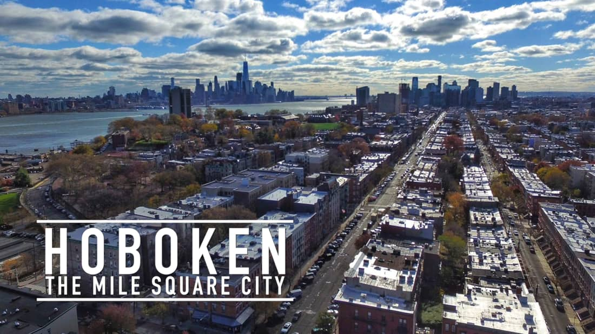
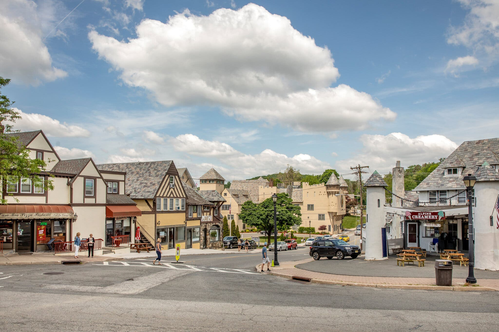

I've lived here most of my life, save for a few years I lived in florida when I was a babe. Its my home. For being the butt of the joke to the rest of the country, once you get out of the cityscape, New Jersey is beautiful. Lush pines and mountainsides give New Jersey its climbs and slopes and yet, since we live so close to the epicenter that is NYC, we have a constant movement of people and commerce.
Hoboken, NJ
nestled on the edge of Jersey City, NJ and the Hudson River is Hoboken, a revitalized small city with so much commute it's been coined the "sixth burough" of NY. Amazing places to eat, a river-side park that stretches along the river and the well famed washington.st make the city very unique.
Sparta, NJ
Nestled high up in the North-West mountains of New Jersey is Sparta, a small cozy town surrounded by the great outdoors. you'll find german themed bars, french pastries and asian cuisine all masterfully made within earshot of each other along its quiet main street.